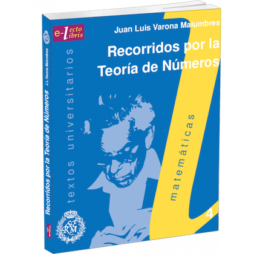
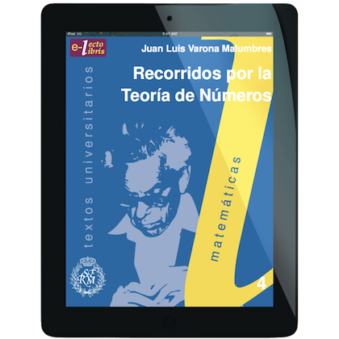

Libro de teoría de números
Bienvenido a las páginas web de Juan Luis Varona. Aquí puedes obtener información sobre el libro de teoría de números que he escrito.
El libro se titula Recorridos por la Teoría de Números, tiene 714 páginas y ha sido publicado en 2014 en la colección Textos Universitarios que coeditan Electolibris y la Real Sociedad Matemática Española.
Segunda edición: Publicada en 2019, 720 páginas.
Puedes leer una reseña publicada en La Gaceta de la Real Sociedad Matemática Española.
El libro está disponible en varios formatos
- Versión papel (con tapa blanda).
- Versión pdf adaptada a ordenador o a la pantalla de un iPad u otras tabletas.
En ambos casos, el libro se puede adquirir en la tienda de Electolibris o en Amazon (si estás interesado en tener el libro y los enlaces anteriores no funcionan, escríbeme si quieres).
Novedades sobre la distribución del libro (abril de 2022)
El libro en papel está agotado y la editorial Electolibris ha cerrado de menera definitiva, así que no hay manera de adquirirlo.
En esas circunstancias, he decidido hacerlo disponible en pdf, completamente gratis, a quien desee tenerlo: versión para ordenador, versión para iPad, versión para otro tipo de tabletas. Las tres versiones tienen el mismo contenido y paginación, sólo difieren en los márgenes.


Si lo deseas, puedes remitir tus comentarios, o las posibles erratas que descubras, a jvarona@unirioja.es.
Nota para los alumnos de la asignatura «Teoría de números y criptografía» del Grado de Matemáticas de la Universidad de La Rioja: En el curso 2014–15 (y siguientes) se seguirán los seis primeros temas de este libro (algunos, muy por encima). Los alumnos matriculados recibirán en papel el texto correspondiente a esos temas.
Índice general
- Prefacio
- 1. Aritmética básica
- 1.1. Divisibilidad
- 1.1.1. La identidad de Bézout
- 1.2. Números primos
- 1.2.1. Factorización de un entero en producto de primos
- 1.2.2. Primeras consecuencias de la descomposición en factores primos
- 1.3. El sistema de numeración posicional. Bases
- 1.3.1. Criterios de divisibilidad
- 1.4. Combinatoria
- 1.4.1. Variaciones
- 1.4.2. Permutaciones
- 1.4.3. Combinaciones
- 1.5. Coeficientes binomiales y binomio de Newton
- 1.5.1. El triángulo de Pascal
- 1.6. Algunas ecuaciones diofánticas
- 1.6.1. Ecuaciones diofánticas lineales
- 1.6.2. Ternas pitagóricas
- 1.6.3. Una pequeña miscelánea de ecuaciones diofánticas
- Ejercicios del tema 1
- 2. Congruencias
- 2.1. Definiciones y primeras propiedades
- 2.2. La ecuación con congruencias lineal
- 2.2.1. ¿Es muy costoso este algoritmo?
- 2.3. La indicatriz de Euler y el teorema de Euler-Fermat
- 2.3.1. Una expresión de la solución de una ecuación con congruencias lineal
- 2.3.2. Una fórmula explícita para evaluar la indicatriz de Euler
- 2.3.3. Primos de Wieferich
- 2.4. Números pseudoaleatorios
- 2.5. Primos en progresiones aritméticas
- 2.5.1. Progresiones aritméticas de primos
- 2.6. Sistemas lineales de congruencias: El teorema chino del resto
- 2.6.1. Módulos no primos entre sí
- 2.7. Teorema de Wilson
- 2.7.1. Primos de Wilson
- 2.8. Números pseudoprimos
- 2.8.1. Números de Carmichael
- 2.8.2. Test de Miller-Rabin
- 2.9. Criptografía
- 2.9.1. Un criptosistema de clave privada basado en la exponenciación discreta
- 2.9.2. Avances hacia la criptografía de clave pública
- 2.9.3. El criptosistema RSA
- 2.9.4. Ataques al criptosistema RSA
- 2.9.5. Firma digital
- 2.10. Teoría de códigos
- 2.10.1. Códigos detectores de errores
- 2.10.2. Funciones hash
- 2.10.3. La información es digital: códigos binarios
- 2.10.4. Códigos correctores
- Ejercicios del tema 2
- 3. Congruencias no lineales
- 3.1. Congruencias polinómicas
- 3.1.1. Congruencias polinómicas con un módulo compuesto
- 3.2. Restos cuadráticos y ley de reciprocidad cuadrática
- 3.2.1. El símbolo de Legendre
- 3.2.2. La ley de reciprocidad cuadrática
- 3.2.3. El símbolo de Jacobi
- 3.2.4. Cálculo rápido del símbolo de Jacobi
- 3.2.5. Leyes de reciprocidad para potencias mayores de dos
- 3.3. Pseudoprimos de Euler
- 3.4. Tests de primalidad para números de formas especiales
- 3.4.1. Test de Pépin
- 3.4.2. Test de Proth
- 3.4.3. Test de Lucas-Lehmer
- 3.5. Raíces primitivas
- 3.5.1. Índices modulares (logaritmos discretos)
- 3.5.2. Aplicación a la resolución de ecuaciones
- 3.6. Criptosistema Elgamal
- 3.6.1. Firma digital con Elgamal
- Ejercicios del tema 3
- 4. Aproximación de un número real por racionales
- 4.1. Teorema de Dirichlet y consecuencias
- 4.1.1. Un criterio de irracionalidad
- 4.2. Orden de aproximación. Teorema de Liouville y consecuencias
- 4.2.1. El teorema y sus consecuencias
- 4.2.2. Un criterio de trascendencia
- 4.3. Refinamientos del teorema de Liouville
- 4.3.1. El correspondiente criterio de trascendencia
- 4.3.2. Reinterpretación en términos de la derivabilidad una función patológica
- 4.3.3. Soluciones de ecuaciones diofánticas
- 4.4. Fracciones de Brocot
- 4.4.1. Aproximaciones óptimas
- 4.5. Teorema de Hurwitz
- 4.5.1. La mejor constante
- 4.6. La constante de Lagrange de un irracional
- 4.7. Cubrimientos de la recta real
- Ejercicios del tema 4
- 5. Fracciones continuas
- 5.1. La sucesión de Fibonacci
- 5.2. Pares de sucesiones recurrentes
- 5.3. Fracciones continuas simples
- 5.4. Fracciones continuas simples finitas
- 5.4.1. Unicidad del desarrollo en fracción continua finita
- 5.5. Convergencia de fracciones continuas simples
- 5.5.1. Unicidad del desarrollo en fracción continua infinita
- 5.5.2. Un ejemplo numérico concreto
- 5.5.3. ¿Las fracciones continuas proporcionan buenas aproximaciones?
- 5.6. Aproximación por racionales mediante desarrollos en fracción continua
- 5.6.1. La constante de Lagrange de un irracional
- 5.7. Fracciones continuas simples periódicas: irracionales cuadráticos
- 5.7.1. La estructura del periodo
- 5.8. El desarrollo de $e$ en fracción continua simple
- Ejercicios del tema 5
- 6. Irracionalidad y trascendencia
- 6.1. Algunos resultados sobre irracionalidad
- 6.1.1. Expresiones trigonométricas
- 6.1.2. Logaritmos
- 6.2. Irracionalidad de $e$
- 6.2.1. Introducción histórica
- 6.2.2. Una demostración elemental
- 6.3. Irracionalidad de $\pi$
- 6.3.1. Algunas adaptaciones y generalizaciones
- 6.4. Los números trascendentes existen
- 6.4.1. No sólo existen, sino que hay muchísimos
- 6.4.2. Pero son difíciles de encontrar
- 6.5. Trascendencia de $e$
- 6.6. Polinomios simétricos
- 6.6.1. El teorema fundamental de los polinomios simétricos
- 6.6.2. Algunas consecuencias sencillas, pero importantes
- 6.7. Trascendencia de $\pi$
- 6.7.1. Esquema de la demostración
- 6.7.2. La demostración
- 6.8. Extensiones y problemas abiertos
- 6.8.1. El séptimo problema de Hilbert
- 6.8.2. Otros resultados sobre trascendencia
- 6.8.3. Tampoco es fácil probar la irracionalidad
- 6.8.4. Problemas abiertos
- 6.9. Polinomios de Bernoulli y $\zeta(2k)$
- Ejercicios del tema 6
- 7. Funciones aritméticas
- 7.1. Funciones aritméticas notables
- 7.2. Números perfectos y amigos. Sucesiones alicuatorias
- 7.3. Producto de Dirichlet y transformada de Möbius
- 7.3.1. La fórmula de inversión de Möbius
- 7.3.2. Algunas relaciones entre funciones aritméticas
- 7.4. Funciones multiplicativas
- 7.4.1. Inversas de funciones completamente multiplicativas
- 7.4.2. Fórmula del producto para funciones multiplicativas
- 7.5. Derivadas de funciones aritméticas
- 7.6. Generalización del producto de Dirichlet
- 7.7. Más tipos de convoluciones y sus inversiones de Möbius
- 7.7.1. Fórmulas de inversión de Möbius con flujos
- Ejercicios del tema 7
- 8. Medias de funciones aritméticas
- 8.1. El orden de magnitud de algunas funciones aritméticas
- 8.1.1. El orden de la función $\tau(n)$
- 8.1.2. La funciones $\sigma(n)$ y $\varphi(n)$
- 8.2. Fórmulas de sumación
- 8.3. Estimaciones asintóticas de funciones
- 8.3.1. Algunas fórmulas elementales
- 8.4. Orden medio de las funciones divisor
- 8.4.1. Parámetro nulo (número de divisores)
- 8.4.2. Parámetro positivo
- 8.4.3. Parámetro negativo
- 8.5. Orden medio de la indicatriz de Euler
- 8.5.1. ¿Cuál es la probabilidad de que dos números tomados al azar sean primos entre sí?
- 8.5.2. Series de Dirichlet
- 8.6. Estimaciones elementales relacionadas con la función de Möbius
- 8.6.1. ¿Cuál es la probabilidad de que un número tomado al azar sea libre de cuadrados?
- 8.6.2. Una cota no muy fina
- 8.7. Resultados equivalentes al teorema del número primo
- 8.7.1. Las funciones de Chebyshev
- 8.7.2. Equivalencia con las medias de la función de Mangoldt
- 8.8. Equivalencia con las medias de la función de Möbius
- Ejercicios del tema 8
- 9. Distribución de los números primos: resultados elementales
- 9.1. Productos de Euler
- 9.1.1. La serie de los inversos de los números primos
- 9.1.2. La identidad de Euler aplicada a las series de Dirichlet
- 9.2. Teorema de Chebyshev
- 9.2.1. Cinco lemas y el teorema
- 9.2.2. Cotas para el tamaño del $k$-ésimo primo
- 9.3. Postulado de Bertrand
- 9.3.1. Distancias entre primos
- 9.3.2. Funciones generadoras de primos
- 9.4. Fórmulas de Mertens
- 9.5. El número de divisores primos de un entero
- 9.5.1. ¿Cuántos divisores primos tiene un entero típico?
- 9.5.2. ¿Cuántos divisores tiene un entero típico?
- 9.5.3. Propiedades estadísticas
- Ejercicios del tema 9
- 10. El teorema del número primo
- 10.1. Recordatorio de análisis complejo
- 10.2. Definición de la zeta de Riemann y resultados preparatorios
- 10.2.1. Extensión de la zeta de Riemann a la banda crítica
- 10.2.2. Extensión de algunas propiedades a la frontera derecha de la banda crítica
- 10.2.3. Sumas de logaritmos de primos
- 10.3. Un teorema tauberiano
- 10.4. El final de la demostración del teorema del número primo
- 10.5. Algunas consecuencias del teorema del número primo
- 10.5.1. ¿Cuál es la probabilidad de que un número tomado al azar sea primo?
- 10.5.2. Fórmula asintótica para el $n$-ésimo primo
- 10.5.3. El tamaño asintótico de la función $\tau(n)$
- 10.5.4. El tamaño asintótico de la función $\varphi(n)$
- 10.6. El tamaño del error al aproximar $\pi(x)$
- 10.6.1. Qué se sabe
- 10.6.2. Qué se sabría si la hipótesis de Riemann estuviera probada
- 10.7. Las aproximaciones que propuso Riemann
- 10.7.1. Trabajo preparatorio
- 10.7.2. Aparecen los ceros de la función zeta
- 10.7.3. Aproximación numérica y gráfica incorporando sucesivos ceros
- Ejercicios del tema 10
- Apéndice: La construcción de los números
- A.1. Conceptos básicos de teoría de conjuntos
- A.1.1. Relaciones
- A.1.2. Aplicaciones entre conjuntos
- A.2. Definición de cuerpo
- A.3. Los números naturales
- A.3.1. Los axiomas de Peano
- A.3.2. Un modelo de los números naturales
- A.4. Los números enteros
- A.5. Los números racionales
- A.6. Los números reales
- A.6.1. Cortaduras de Dedekind
- A.6.2. Unicidad de los números reales
- A.6.3. Otras construcciones de los números reales
- A.7. Los números complejos
- A.8. Cuaterniones y octoniones
- A.9. Y aún hay más
- Bibliografía
- Índice alfabético
Para entrar en contacto (preferiblemente electrónico)
Juan Luis VaronaDpto. de Matemáticas y Computación
Universidad de La Rioja
Complejo Científico-Tecnológico
Calle Madre de Dios 53
26006 Logroño
Teléfono: 34 - 941 299 451. Fax: 34 - 941 299 460